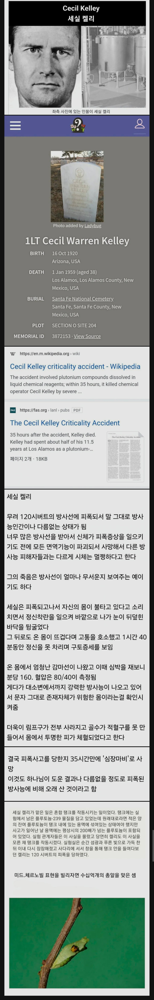

인류 역사상 가장 많은 방사선에 피폭당한 사람 ㄷㄷ
댓글
최대한 빨리 안락사 하는게 최고임..
하지만.. 경우에 없는 사례이기 때문에..
연구를 위해 어쩔 수 없음. (최대한 오래) 살려야 한다.
아직도 누가 저 탱크를 일부러 조작했는지 밝혀지지 않음.
조사를 하려고 해도 방사선 범벅인 구역이어서 조사도 제대로 이뤄지지 않았고
당장 저 사람의 상태에만 시선이 집중돼서 범인(?)을 끝내 못잡음.
과연 누가 플로토늄을 쏟아 부어 놨을까...
이거는 그냥 죽여주는게 낫지…
일반인의 연간 자연방사능 피폭량은 2.4mSv이다.
2024년 UNSCEAR기준 5.5mSv로 올라갔음
야외자연방사선보다 아파트내부 콩크리트가 방출하는 방사선량이 약간 더 많다.
방사능 피폭사례들 보면
뭐 법때문에 어쩔수 없는것도 있겠지만
방사능피폭 데이터 수집하려고
가망도 없고 고통을 호소하는 피해자들
억지로 연명시키는거같아서 좀 잔인한거같음
도카이촌 사고 보면 골수이식은 부분적으로 성공해서 희망이 있어보였음 다만 몸속 나트륨도 방사능 뿜어내는걸로 바뀌어서 이식받은 골수도 파괴됬다더라
와씨.. 몸에 전해질이란 건 다 변성 됐구나. ㅎㄷㄷ
총 수억발 맞고 35시간 생존이면 진짜 너무 고통 스러운거 아니냐 ㄷㄷ
나는 그 실험실에 이상한 방사능 기구 희생해서 막은 과학자분 멋지던데
근데 그 이상한 기구 안전규정에 안맞게 실험하던 과학자라서..
이러한 행위를 지켜보던 엔리코 페르미는 시연을 이런 식으로 하면 1년도 못 살고 죽을 것이라고 경고했고 리처드 파인만도 잠자는 용의 꼬리를 간질이는 행위(tickling the tail of a sleeping dragon)라며 못마땅해했다.
라네
내가 좀 잘못알고있었네
ㅇㅇ 근데 뭐 미국에서도 자기 몸을 던져 더 큰 재난을 막았다고 용감한 사람이라고 추앙했었음
저사람으로 연극도 하고 별 이름붙이고 난리였음
트롤짓 하다가 사고내고 같이 일하던 과학다들도 다 죽인거라 그닥 멋지진 않다고 봄
수류탄 안전핀 뺏다 끼웠다가 장난치다가 진짜로 터지니까 온몸으로 막은꼴인데
사고터졌을때 희생해서 더 큰 사고를 막은건 잘한 일인데 애초에 지가 트롤짓해서 사고가 터진것
ㄹㅇ? 나는 이때까지 잘못알고있었네 난 걍 실험실 사고로 터진거 막은줄
사고(본인이장난치다가냄)
그리고 사고 터지고 나서도 별 필요도 없는 거리별 피폭량 계산한다고 전부다 그자리에 서있게 해서 다른 사람들 더 피폭되게함ㅋㅋ
궁금한게 방사선사들 배지 차고 들어간다는데 일 많으면 빼고도 들어감?
어디든 그렇게 안전규정 무시하는 애들이있긴함
그래서 좆돼는 사례 많음
TLD 빼고 일하는건 저어기 조선소 비파괴검사같은 방사선계의 막장에서나 있었던 일이고... 요즘은 거의 없을걸.
다른직장은 모르겠고 병원은 거동불편한환자 잡고하는경우에 빼고들어가는애들 종종있는데 솔직히 엑스레이 몇번찍는다고 허용치 절대못넘김 10년동안 한번봤는데 그것도 알아봤더니 배지가 깨져서 불량난거였음
인간이 느낄수있는 고통의 한계치를 다느끼고 사망했겠네
온몸을 바늘로 관통당하는데 외상이 없는..
차라리 즉사가 낫지 몸이 재생못해 산체로 썩어가는 죽는다니...나같으면 자살함...
비유하자면 몸을 믹서기로 갈았는데 모양만 원상태로 유지된거라보면됨
나노단위 나선수리검 쳐맞고 살아있다는 거네?
섬뜩하군
원자폭탄 피해자보다 더 큰 수치임?ㄷㄷ
전기, 방사능 전문가들이 진짜 대단하다 이건 진짜 마법사들이다
일단 피폭사례보면 저건 호상이 아닐까 생각드는 정도던데. 저 사람 다음 수준의 사람들은 글로만 봐도 고통스럽게 죽어간게 표현이 되더라
어허 개드립에서 호상이라고 하면 개욕처먹음 ㅋㅋㅋ 나 몇일전 호상 댓굴 달앗다가 댓굴한페이지 까임 ㅋㅋ
35시간 살아있던게 하느님이 도운걸까.. 외면한걸까..
그새끼는 걍 구경 한거지
없는 사람이 어떻게 구경합니까
그양반은 사람이 아닙니다
없는 존재가 뭘 구경이나 하긴 합니까?
궁금증이 많은 사이코 한놈이 했을것 같다
빨리 뒤지고 싶은 고통을 무려 36시간으로 연장해주신 하나님의 도움 ㅅㅂ
대가리에 총쏘는게 맘편할듯